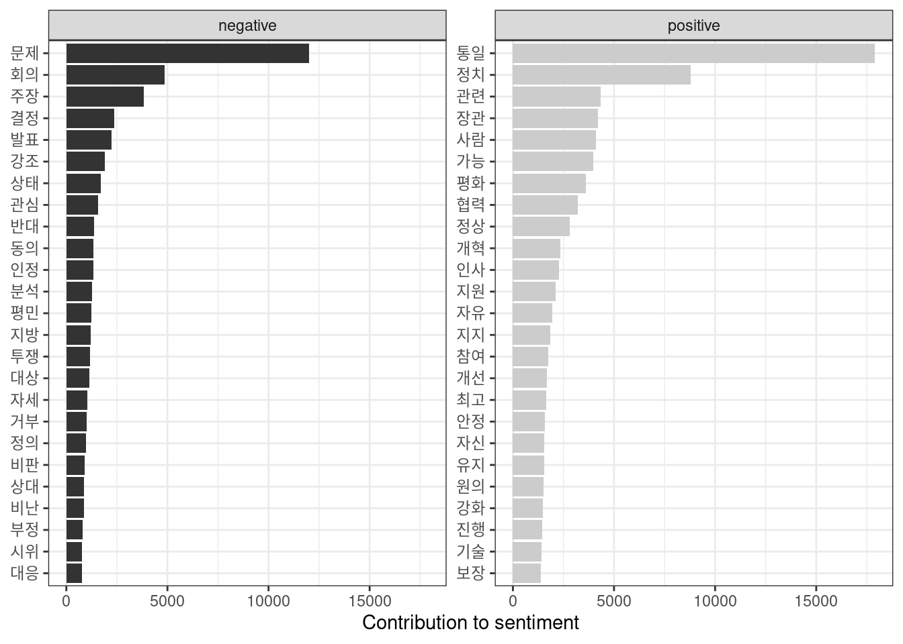
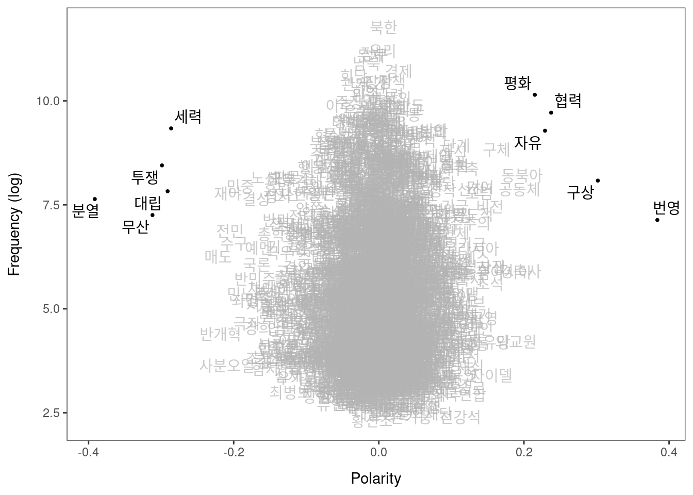
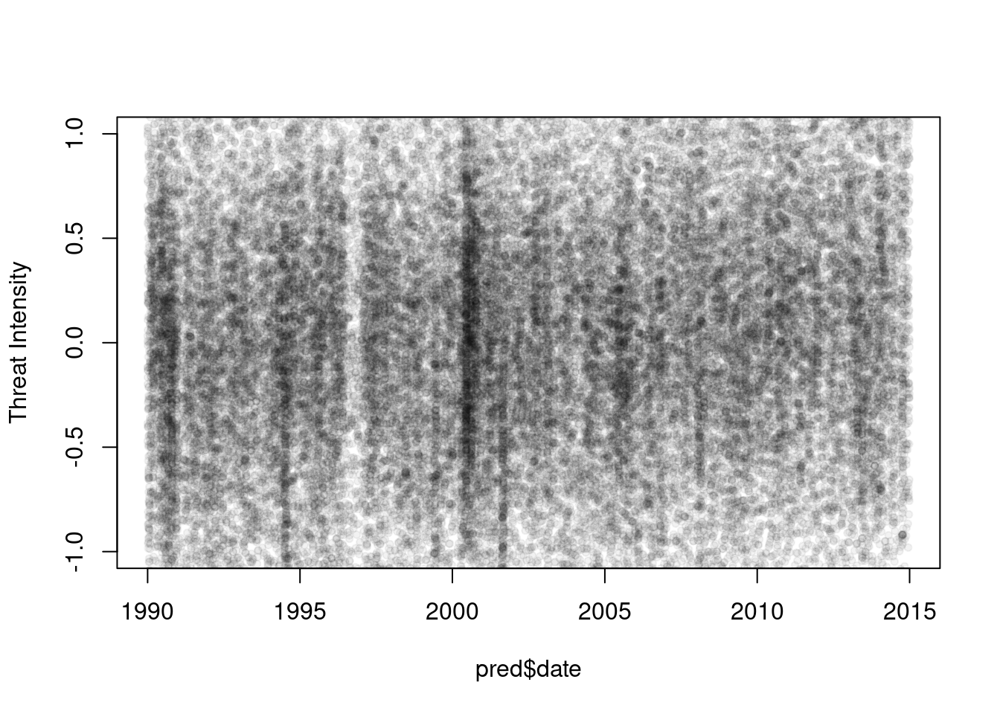
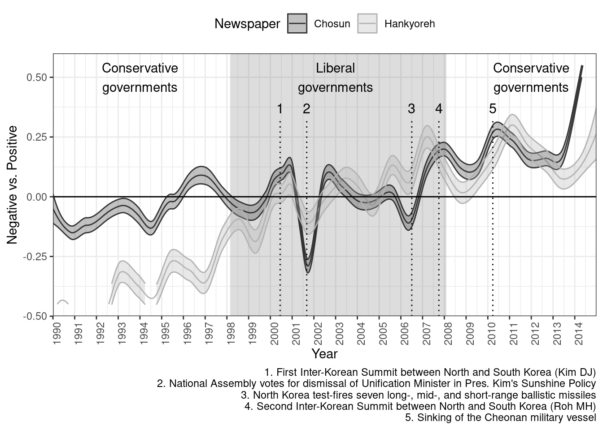
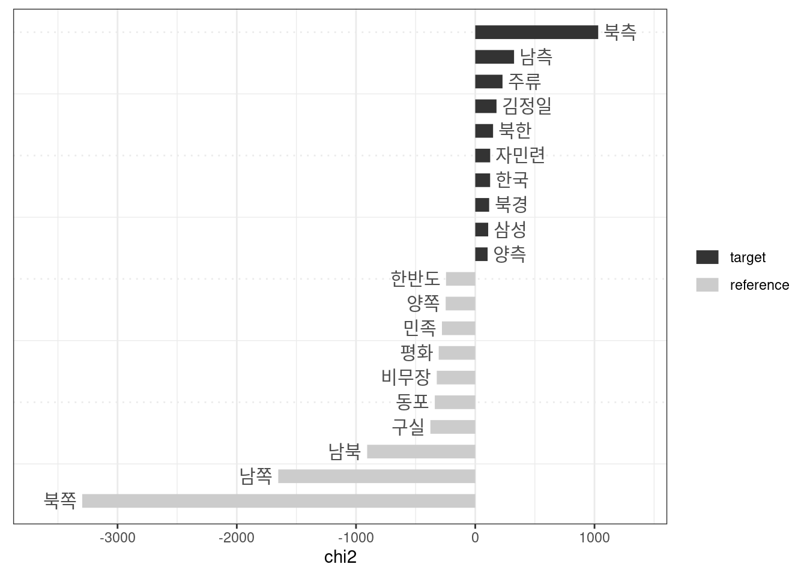
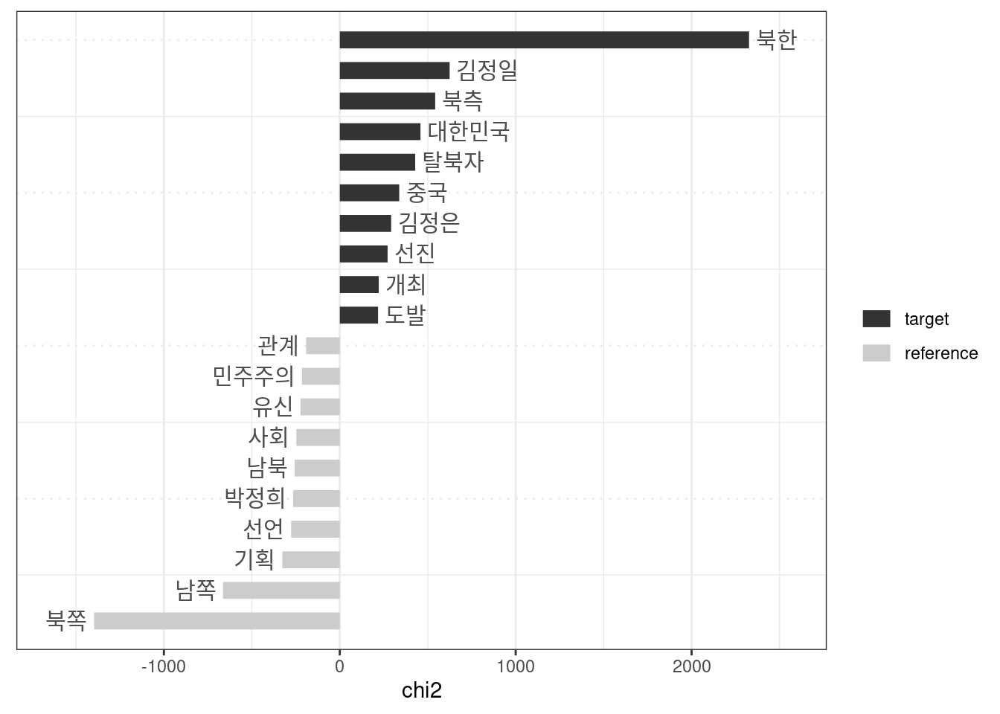
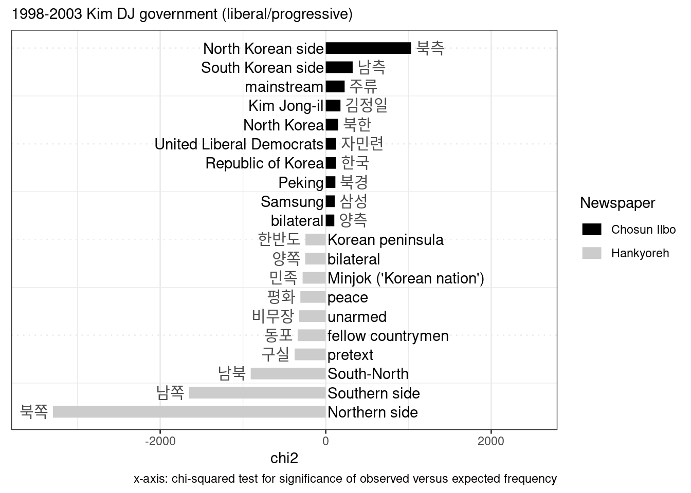
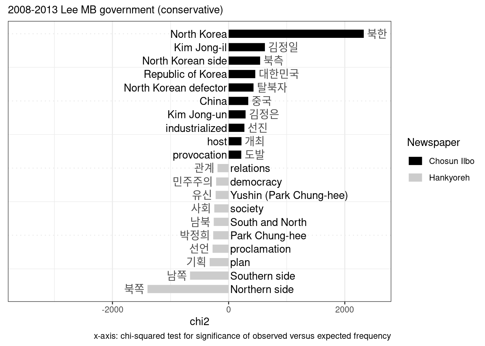

Load libraries
library(lubridate)
library(ggplot2)
library(dplyr)
library(tidytext)
library(quanteda)
library(scales)
library(LSX)Load the data.
data_uni <- readRDS("data/data_uni_nouns_sample")#Sentiment lexicon Load the Korean sentiment lexicon.
## [1] "LC_CTYPE=ko_KR.UTF8;LC_NUMERIC=C;LC_TIME=ko_KR.UTF8;LC_COLLATE=ko_KR.UTF8;LC_MONETARY=ko_KR.UTF8;LC_MESSAGES=C;LC_PAPER=ko_KR.UTF-8;LC_NAME=C;LC_ADDRESS=C;LC_TELEPHONE=C;LC_MEASUREMENT=ko_KR.UTF-8;LC_IDENTIFICATION=C"##
## ─ Column specification ────────────────────────────
## cols(
## term = col_character()
## )
##
##
## ─ Column specification ────────────────────────────
## cols(
## term = col_character()
## )See the top sentiment words.
tidy_news <- data_uni %>%
unnest_tokens(word, text)
tidy_news %>%
inner_join(senti) %>%
count(word, sort = TRUE) ## Joining, by = "word"senti_news <- tidy_news %>%
inner_join(senti) %>%
count(Newspaper, Prezparty, sentiment) %>%
tidyr::spread(sentiment, n, fill = 0) %>%
mutate(sentiment = positive - negative)## Joining, by = "word"senti_word_counts <- tidy_news %>%
inner_join(senti) %>%
filter(Government == "1990-1993 Roh TW") %>%
count(word, sentiment, Government, sort = TRUE) %>%
ungroup()## Joining, by = "word"senti_word_countsPlot the top sentiment words.
senti_word_counts %>%
group_by(sentiment) %>%
top_n(25) %>%
ungroup() %>%
mutate(word = reorder(word, n)) %>%
ggplot(aes(word, n, fill = sentiment)) +
geom_col(show.legend = FALSE) +
facet_wrap(~sentiment, scales = "free_y") +
labs(y = "Contribution to sentiment",
x = NULL) +
coord_flip() +
scale_fill_grey() +
theme_bw()## Selecting by n # LSS sentiments
# tokenize text corpus and remove various features
corp_sent <- data_uni %>%
unique() %>%
mutate(Body = gsub("</?[^>]+>|▲ 종이신문보기", "", Body)) %>%
corpus() %>%
corpus_reshape(to = "sentences")
toks <- corp_sent %>%
tokens()
# create a document feature matrix from the tokens object
dfmat <- toks %>%
dfm(remove = "") %>%
dfm_trim(min_termfreq = 5)topfeatures(dfmat, 20)## 북한 통일 우리 정부 문제 남북 대통령 한국 경제 중국 회담
## 129413 94417 72746 68951 64971 54060 53658 52417 44903 39960 39947
## 정치 의원 정책 미국 장관 국가 기자 사람 관계
## 38322 36757 35157 35152 34474 33897 33403 32760 32724# Sys.setlocale(locale = "C")
dict_sentiment <- dictionary(list(positive = c("구상", "자유", "평화", "협력", "지원", "번영"),
negative = c("투쟁", "대립", "무산", "세력", "비판", "분열")))
dict_sentiment## Dictionary object with 2 key entries.
## - [positive]:
## - 구상, 자유, 평화, 협력, 지원, 번영
## - [negative]:
## - 투쟁, 대립, 무산, 세력, 비판, 분열seed <- as.seedwords(dict_sentiment)
seed## 구상 자유 평화 협력 지원 번영 투쟁 대립 무산 세력 비판 분열
## 1 1 1 1 1 1 -1 -1 -1 -1 -1 -1no need to use this chunk if you use the above. this chunk was only necessary due to rmarkdown errors for building the website.
tmod_lss <- readRDS("data/tmod_uni")head(coef(tmod_lss), 20) # most positive words## 번영 구상 협력 자유 평화 동북아 경축사
## 0.3838366 0.3018378 0.2374562 0.2290487 0.2149961 0.1972074 0.1952312
## 공동체 외교원 동북아시아 구체 상생 자이델 초석
## 0.1939207 0.1886916 0.1631943 0.1625184 0.1559956 0.1558384 0.1530704
## 비전 청사진 기여 안인 포럼 민주자유당
## 0.1530104 0.1455864 0.1393962 0.1385102 0.1383043 0.1335733tail(coef(tmod_lss), 20) # most negative words## 노선 예멘 국론 결성 반민주 민노총 극좌
## -0.1575767 -0.1652422 -0.1685292 -0.1689977 -0.1706814 -0.1803389 -0.1818727
## 좌경 민중 수구 전민 재야 사분오열 반개혁
## -0.1837750 -0.1909429 -0.1997591 -0.2049259 -0.2078748 -0.2090829 -0.2181827
## 매도 세력 대립 투쟁 무산 분열
## -0.2213635 -0.2862300 -0.2910431 -0.2988402 -0.3119095 -0.3913885textplot_terms(tmod_lss, dict_sentiment[c("negative", "positive")])
# ggsave("plots/5_uni_seeds.jpg", width=8, height= 5, dpi = 300)dfmat <- dfm_group(dfmat)
# predict sentiment scores
pred <- as.data.frame(predict(tmod_lss, se.fit = TRUE, newdata = dfmat))
pred$date <- docvars(dfmat, "Date")
pred$Newspaper <- docvars(dfmat, "Newspaper")plot(pred$date, pred$fit, col = rgb(0, 0, 0, 0.05),
pch = 20, ylim = c(-1, 1),
ylab = "Threat Intensity")
pred_sm_chos <- pred %>%
filter(Newspaper == "Chosun") %>%
smooth_lss(engine = "locfit")
pred_sm_hani <- pred %>%
filter(Newspaper == "Hankyoreh") %>%
smooth_lss(engine = "locfit")
pred_sm_hankook <- pred %>%
filter(Newspaper == "Hankook") %>%
smooth_lss(engine = "locfit")
# Sys.setlocale(locale = "Korean")
head(pred_sm_chos)head(pred_sm_hani)head(pred_sm_hankook)plot trend
x <- bind_rows("Chosun" = pred_sm_chos, "Hankyoreh" = pred_sm_hani, .id = "Newspaper") %>%
mutate(date = as.Date(date, format = "ymd")) %>%
mutate(Newspaper = as.factor(Newspaper)) %>%
ggplot(aes(date, fit, group = Newspaper, color = Newspaper, fill = Newspaper)) +
annotate("rect", xmin = as.Date("1998-02-25"), xmax = as.Date("2008-02-2"),
ymin = -Inf, ymax = Inf, alpha = 0.2) +
geom_line() +
geom_ribbon(aes(ymin = fit + se.fit, ymax = fit - se.fit), alpha = 0.3) +
geom_hline(yintercept = 0) +
scale_color_manual(values = c("grey20", "grey70")) +
theme_bw() +
labs(x = "Year", y = "Negative vs. Positive",
caption = "1. First Inter-Korean Summit between North and South Korea (Kim DJ)\n2. National Assembly votes for dismissal of Unification Minister in Pres. Kim's Sunshine Policy\n3. North Korea test-fires seven long-, mid-, and short-range ballistic missiles\n4. Second Inter-Korean Summit between North and South Korea (Roh MH)\n5. Sinking of the Cheonan military vessel") +
scale_x_date(breaks = "1 year", labels = date_format("%Y"),
limits = as.Date(c("1990-01-01", "2014-12-31")), expand = c(0,0)) +
theme(axis.text.x = element_text(angle = 90, hjust = 1),
legend.position = "top") +
scale_fill_manual(values=c("grey20", "grey70")) +
annotate(geom = "text", x = as.Date("1994-01-01"), y = 0.5,
label = "Conservative\ngovernments", hjust = "center") +
annotate(geom = "text", x = as.Date("2003-01-01"), y = 0.5,
label = "Liberal\ngovernments", hjust = "center") +
annotate(geom = "text", x = as.Date("2012-01-01"), y = 0.5,
label = "Conservative\ngovernments", hjust = "center") +
annotate(geom = "text", x = as.Date("2000-06-13"), y = 0.37,
label = "1", hjust = "center", size = 4) +
annotate(geom = "text", x = as.Date("2001-9-3"), y = 0.37,
label = "2", hjust = "center", size = 4) +
annotate(geom = "text", x = as.Date("2006-07-4"), y = 0.37,
label = "3", hjust = "center", size = 4) +
annotate(geom = "text", x = as.Date("2007-10-02"), y = 0.37,
label = "4", hjust = "center", size = 4) +
annotate(geom = "text", x = as.Date("2010-3-26"), y = 0.37,
label = "5", hjust = "center", size = 4) +
annotate("segment", x = as.Date(c("2000-06-13", "2001-9-3", "2006-07-4", "2007-10-02", "2010-3-26")),
xend = as.Date(c("2000-06-13", "2001-9-3", "2006-07-4", "2007-10-02", "2010-3-26")),
y = - Inf, yend = 0.33, linetype = 3) +
ylim(-0.45, 0.55)
x## Warning: Removed 302 row(s) containing missing values (geom_path).
# ggsave("plots/5_uni_lss.jpg", width=9, height= 5, dpi = 300)Look up key periods
data_uni %>%
filter(Date > "2001-9-01" & Date < "2001-09-30") %>%
mutate(Body = gsub("</?[^>]+>|▲ 종이신문보기", "", Body)) read news
# Sys.setlocale(locale = "Korean")
x <- data_uni %>%
filter(Newspaper == "Chosun" & Date < "2002-01-01" & Date > "2001-01-01" ) %>%
mutate(Body = gsub("</?[^>]+>|▲ 종이신문보기", "", Body)) %>%
filter(grepl("김정일", text)) %>%
select(Date, Title, Body, Newspaper)
xx[4,] %>% write.csv()## "","Date","Title","Body","Newspaper"
## "1",2001-12-29,"정치 2001","김대중(金大中) 대통령의 2001년은 ‘권력무상’을 절감한 한 해였다. 작년 12월 10일 노벨평화상 수상 분위기 속에서 새해를 맞은 김 대통령은 국정 전반에 대해 자신감을 내비치며 강하게 나갔다. 그러나 과욕에서 빚어진 무리수들은 부작용과 반발, 국론분열을 낳았다. 이는 거꾸로 부메랑이 되어 김 대통령에게 돌아왔고, 급기야 김 대통령이 민주당 총재직을 내놓는 상황에까지 이르렀다. 김 대통령은 1월 11일 연두기자회견에서 “하반기부터 경제가 호전돼 6%대 성장률, 3%대 물가, 100억달러 수준의 무역수지 흑자를 내다볼 수 있을 것”이라고 말했다. 김정일(金正日) 북한 국방위원장의 답방에도 자신감을 내비쳤고, “국민화합을 위해 정성과 노력을 다하고 인사정책을 획기적으로 개선하겠다”고 약속했다. 김 대통령은 그러면서 ‘언론개혁’의 필요성을 언급, 대대적인 언론사 세무조사와 언론사 대주주 사법처리를 예고했다. 그러나 이후 국정은 김 대통령의 약속 혹은 기대와는 다르게 굴러갔다. 99년 10.9%, 2000년 8.8%를 기록했던 경제성장률은 연초 김 대통령이 예상한 6%대에 훨씬 못 미치는 3.2%에 그칠 것으로 전망된다. 2000년 포드의 대우차 매입 취소, 한보철강 해외 매각 무산에 이어 올해엔 하이닉스반도체 처리 지연, 국제 반도체 값 하락 등이 발목을 잡았다. 김 위원장의 연내 답방도 무산되면서 남북관계는 답보상태를 면치 못했고, 미국의 부시 신행정부와의 관계도 원만하지 못했다. 그러나 보다 근본적인 문제는 국론통합에 실패하고 도처에서 분열과 갈등을 야기해 국력을 낭비한 점이었다. ‘언론개혁’은 당초 계획대로 비판적인 신문사의 대주주들을 구속하는 데까지 갔지만, ‘언론탄압’의 의혹이 잇따라 제기되면서 우리 사회는 극심한 분열상을 겪었다. ‘국민화합을 위한 정성과 노력’이란 인사 탕평책 다짐은 실제로는 거꾸로 나타나 이 정권 최대의 문제점으로까지 부각됐다. 인사상의 문제는 집권당 내부로부터의 반발도 불렀다. 5월 21일 안동수(安東洙) 법무장관 임명에 따른 파동이 대표적인 사건이었다. 이른바 ‘충성메모’ 파문으로 안 장관은 43시간 만에 장관직에서 물러났고, 추천자를 문책해야 한다는 주장까지 거세게 나오면서 민주당 내 정풍운동의 도화선이 됐다. 5월 24일 초선의원 6명, 25일 재선 2명과 초선의원 1명이 이른바 ‘비선(秘線)’의 문제를 거론하면서 획기적 당정쇄신을 주장하는 서명운동에 들어갔다. 김 대통령이 이에 대한 명확한 조치를 계속 회피하자 정풍파는 10·25 재·보선 패배 후 2차 거사를 일으켰다. 당내 5개 모임이 연대하는 등 규모는 5월보다 훨씬 커졌고, 최고위원들은 11월 2일 일괄사퇴했다. 해법을 찾지 못한 김 대통령은 11월 8일 결국 “책임을 통감한다”면서 총재직 사퇴를 선언했다. 박지원(朴智元) 정책기획수석도 뒤이어 물러났다. 김 대통령이 총재직을 사퇴할 정도로 권력이 약화된 데는 특히 ‘DJP 공조’의 붕괴가 큰 전기가 됐다. 지난 8월 24일 한나라당이 8·15 방북단 파문을 이유로 임동원(林東源) 통일부장관의 해임건의안을 국회에 제출하고, 그동안 민주당과의 공조를 유지해온 자민련이 해임건의안 찬성 입장을 밝힘으로써 공조에 균열이 가기 시작했다. 김종필(金鍾泌) 당시 자민련 명예총재는 “중용의 길이 있다”면서 임 장관의 자진사퇴를 요구했으나 김 대통령은 이를 거부했다. 9월 3일 실시된 국회 본회의의 임 장관 해임건의안 투표는 찬성 148, 반대 119표로 가결됐다. 이후 JP가 빠진 DJ만의 정권은 소수정권으로 급격히 국정주도권을 잃게 됐다. 이 같은 상황에서 치러진 10·25 재·보선에서의 민주당 3대0 완패는 김 대통령에게는 치명타를 안겼고, 결국 김 대통령 스스로 ‘정치권력’을 놓지 않을 수 없게 만드는 결과를 낳았다. 연중 정국을 뒤흔든 연쇄 ‘게이트’는 김 대통령의 아들들에까지 미쳤다. 장남 김홍일(金弘一) 의원은 이용호(李容湖) G&G그룹 회장의 주가조작에 관여한 여운환(呂運桓)씨와 제주 여행지에서 만나는 등 수차례 만나 식사를 함께한 것으로 드러났다. 차남 홍업(弘業)씨는 진승현(陳承鉉)씨의 로비스트 최택곤(崔澤坤)씨로부터 구명부탁을 받은 것으로 드러났고, 3남 홍걸(弘傑)씨도 미국 내 소유 주택 문제가 도마 위에 올랐다. 진승현 게이트 수사과정에서 신광옥(辛光玉) 법무차관이 청와대 민정수석 재직 당시의 수뢰혐의로 구속됐고, 김은성(金銀星) 전 국정원 2차장은 스스로 ‘진승현 리스트’를 만들었고 돈도 받은 것으로 드러났다. 국정 최고위층의 부정과 이로 인한 국정난맥상은 민심의 이반을 결정적으로 불러왔다. 총재직 사퇴 이후 김 대통령은 국정전념, 탈정치를 표방하면서 완전히 수비자세로 전환했다. 김 대통령의 권력누수 현상은 외신에까지 보도되는 상황이 됐다. ‘초강’으로 시작해 ‘초약’으로 막을 내린 권력무상의 1년이었다. /신정록기자 jrshin@chosun.com
","Chosun"Load the data.
data_uni <- readRDS("data/toks_uni")Prepare and check
# Sys.setlocale(locale = "C")
stopwords <- c("그래픽", "지난해", "한겨레", "기사", "기자", "본지", "측은", "작년", "신문", "종이", "우리", "지면", "보도", "생각", "이날", "간의", "조선일보", "블로그", "일자", "지음", "발인", "병원", "부친상", "모친상", "천억", "천만", "애초", "이용인", "이제훈", "김인구", "에스", "일동", "상사", "약수", "조처", "조치", "과장", "팀장", "원제", "본부", "회장", "임직원", "이사", "당초", "텔레비전", "의원", "후보",
"입장", "총재", "대통령", "김정", "관계자", "소식통", "원장", "학회", "장인상", "김민배", "선생", "경영")
# stopwords_wild <- c("경제민주화*")
#KIm DJ
data_words <- data_uni %>%
tokens_subset(!docvars(data_uni, "Newspaper") == "Hankook" &
docvars(data_uni, "Government") == "1998-2003 Kim DJ") %>%
tokens_remove(pattern = stopwords, valuetype = "fixed") %>%
# tokens_remove(pattern = stopwords_wild, valuetype = "glob") %>%
dfm()
# Sys.setlocale(locale = "Korean")
tstat_freq <- data_words %>%
dfm() %>%
textstat_frequency(n = 20)
head(tstat_freq, 40)#text scaling
result_keyness <- textstat_keyness(data_words, target = docvars(data_words, "Newspaper") == "Chosun")
textplot_keyness(result_keyness, n = 10, color = c("grey20", "grey80")) 
#different period
data_words2 <- data_uni %>%
tokens_subset(!docvars(data_uni, "Newspaper") == "Hankook" &
docvars(data_uni, "Government") == "2008-2013 Lee MB") %>%
tokens_remove(pattern = stopwords, valuetype = "fixed") %>%
# tokens_remove(pattern = stopwords_wild, valuetype = "glob") %>%
dfm()
# Sys.setlocale(locale = "Korean")
tstat_freq <- data_words %>%
dfm() %>%
textstat_frequency(n = 20)
head(tstat_freq, 40)#text scaling
result_keyness2 <- textstat_keyness(data_words2, target = docvars(data_words2, "Newspaper") == "Chosun")
textplot_keyness(result_keyness2, n = 10, color = c("grey20", "grey80"))  Look up stray words
# Sys.setlocale(locale = "C")
x <- data_uni %>%
# tokens_subset(docvars(data_uni, "Newspaper") == "Hankyoreh") %>%
kwic(pattern = "자민련", window = 5, valuetype = "fixed")
# Sys.setlocale(locale = "Korean")
xPlot and label
x <- textplot_keyness(result_keyness, n = 10) +
xlim(-3500, 2500) +
labs(color = "Newspaper", subtitle = "1998-2003 Kim DJ government (liberal/progressive)",
caption = "x-axis: chi-squared test for significance of observed versus expected frequency") +
scale_color_manual(values = c("black", "grey80"),
labels = c("Chosun Ilbo", "Hankyoreh")) +
annotate("text", x = -20, y = 20, label = "North Korean side", hjust = 1) +
annotate("text", x = -20, y = 19, label = "South Korean side", hjust = 1) +
annotate("text", x = -20, y = 18, label = "mainstream", hjust = 1) +
annotate("text", x = -20, y = 17, label = "Kim Jong-il", hjust = 1) +
annotate("text", x = -20, y = 16, label = "North Korea", hjust = 1) +
annotate("text", x = -20, y = 15, label = "United Liberal Democrats", hjust = 1) +
annotate("text", x = -20, y = 14, label = "Republic of Korea", hjust = 1) +
annotate("text", x = -20, y = 13, label = "Peking", hjust = 1) +
annotate("text", x = -20, y = 12, label = "Samsung", hjust = 1) +
annotate("text", x = -20, y = 11, label = "bilateral", hjust = 1) +
annotate("text", x = 20, y = 10, label = "Korean peninsula", hjust = 0) +
annotate("text", x = 20, y = 9, label = "bilateral", hjust = 0) +
annotate("text", x = 20, y = 8, label = "Minjok ('Korean nation')", hjust = 0) +
annotate("text", x = 20, y = 7, label = "peace", hjust = 0) +
annotate("text", x = 20, y = 6, label = "unarmed", hjust = 0) +
annotate("text", x = 20, y = 5, label = "fellow countrymen", hjust = 0) +
annotate("text", x = 20, y = 4, label = "pretext", hjust = 0) +
annotate("text", x = 20, y = 3, label = "South-North", hjust = 0)+
annotate("text", x = 20, y = 2, label = "Southern side", hjust = 0) +
annotate("text", x = 20, y = 1, label = "Northern side", hjust = 0)## Scale for 'x' is already present. Adding another scale for 'x', which will
## replace the existing scale.## Scale for 'colour' is already present. Adding another scale for 'colour',
## which will replace the existing scale.x
#ggsave("plots/5_uni_keyness.jpg", width=7, height=4, dpi = 300) x <- textplot_keyness(result_keyness2, n = 10) +
xlim(-3500, 2500) +
labs(color = "Newspaper", subtitle = "2008-2013 Lee MB government (conservative)",
caption = "x-axis: chi-squared test for significance of observed versus expected frequency") +
scale_color_manual(values = c("black", "grey80"),
labels = c("Chosun Ilbo", "Hankyoreh")) +
annotate("text", x = -30, y = 20, label = "North Korea", hjust = 1) +
annotate("text", x = -30, y = 19, label = "Kim Jong-il", hjust = 1) +
annotate("text", x = -30, y = 18, label = "North Korean side", hjust = 1) +
annotate("text", x = -30, y = 17, label = "Republic of Korea", hjust = 1) +
annotate("text", x = -30, y = 16, label = "North Korean defector", hjust = 1) +
annotate("text", x = -30, y = 15, label = "China", hjust = 1) +
annotate("text", x = -30, y = 14, label = "Kim Jong-un", hjust = 1) +
annotate("text", x = -30, y = 13, label = "industrialized", hjust = 1) +
annotate("text", x = -30, y = 12, label = "host", hjust = 1) +
annotate("text", x = -30, y = 11, label = "provocation", hjust = 1) +
annotate("text", x = 30, y = 10, label = "relations", hjust = 0) +
annotate("text", x = 30, y = 9, label = "democracy", hjust = 0) +
annotate("text", x = 30, y = 8, label = "Yushin (Park Chung-hee)", hjust = 0) +
annotate("text", x = 30, y = 7, label = "society", hjust = 0) +
annotate("text", x = 30, y = 6, label = "South and North", hjust = 0) +
annotate("text", x = 30, y = 5, label = "Park Chung-hee", hjust = 0) +
annotate("text", x = 30, y = 4, label = "proclamation", hjust = 0) +
annotate("text", x = 30, y = 3, label = "plan", hjust = 0)+
annotate("text", x = 30, y = 2, label = "Southern side", hjust = 0) +
annotate("text", x = 30, y = 1, label = "Northern side", hjust = 0)## Scale for 'x' is already present. Adding another scale for 'x', which will
## replace the existing scale.## Scale for 'colour' is already present. Adding another scale for 'colour',
## which will replace the existing scale.x
# ggsave("plots/5_uni_keyness_Lee.jpg", width=7, height=4, dp = 300)